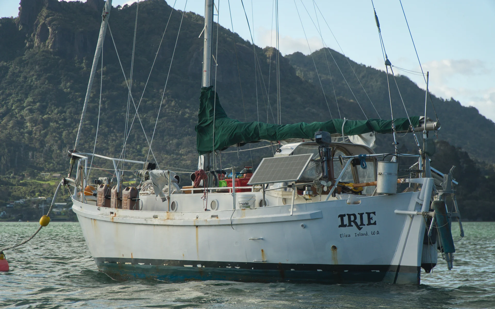
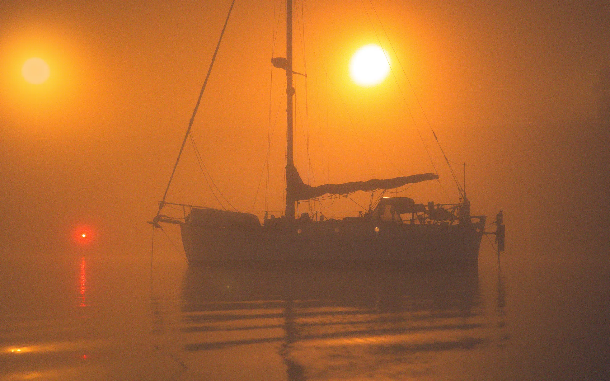
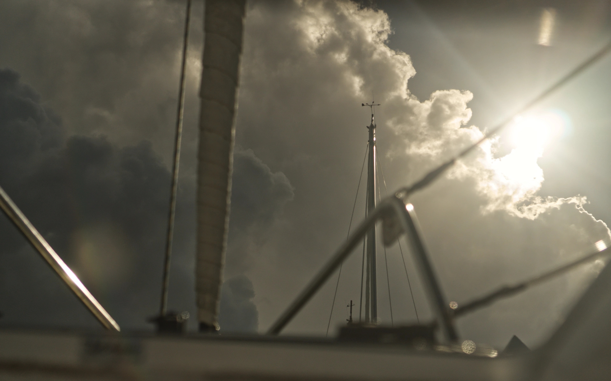
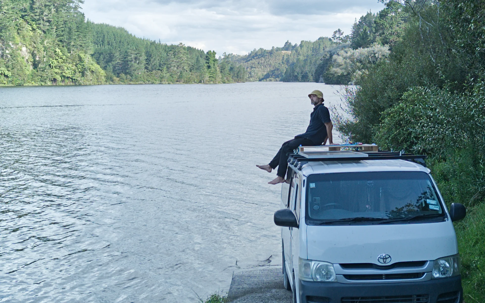
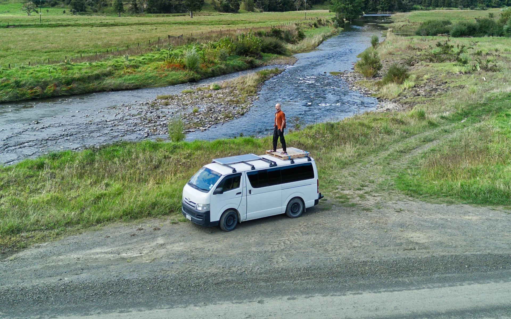

Offgrid
Since 2022, my partener at the time and I decided we are done with feeding the landlord class, with not having a say about our living spaces, not being able to create, upgrade, modify and decorate, without penalties or permission.
She had a campervan, I had a cargo van and two boats (a long story). With 3 available living spaces, we went offgrid.
What followed, is a wild life of learning, challenge, adventure and creation.
Irie

Irie is a 33ft steel sailboat that for 3 years was my home, my workspace and playground. It was the biggest object I used to own and marked an era of massive challenge and adventure.
In 2021 I bought Irie with intention to move aboard and forego the common formula for life and take on a cruising lifestyle. In 2022 I moved aboard with my then partner. In 2023 Irie was hauled out for a major refit aacross all systems. Since, life changed fast and in a bid to remain flexible, mobile and true to my circumstance, I decided to step away. In 2026 I moved on from Irie.
A digital tribute and tombstone can be viewed at Dear Irie


Van

In 2025, I built a campervan based on a 2010 Hiace 3.0DT ZL.
This collection will document associated stories.
Lifestyle

I've been a digital nomad since 2022. This is a collection of notes on various aspects of such living.